臼杵大佛殿/大分県臼杵市
臼杵大佛殿/大分県臼杵市
大分県臼杵市といえば臼杵の石仏。
そんな国宝級の石仏を見に行こうと車を走らせているとこんな素敵過ぎる看板が。
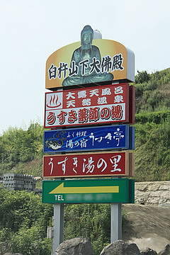
もちろん国宝そっちのけで矢印に導かれまくりなのである。
ここは広大な敷地内に温泉と大仏が同居する素晴らしき観光施設。
観光客を呼び寄せるために大仏を建立したのか、大仏拝観客のために温泉を用意したのか知らないが、いずれにせよ決して無難なコンビネーション、とは思い難い。少なくとも21世紀の現代においては。
ここは2007年末にオープンしたばかり。出来立てホヤホヤ掘りたてホカホカ、の大仏＆温泉なのである。
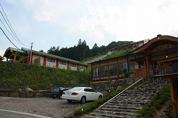
↑温泉施設に人が集中しているようで、大仏殿にはあまり人がいない御様子。
修行中の身である当方としては当然、大仏を拝観しに来たわけで、温泉など入っている余裕などないのだが、大仏拝観＆温泉入浴セット券が思いの他お徳プライスだったのでついついセット券を所望してしまった。ついつい、ね。
チケット売り場に貼られていたポスターには日本最大級の文字が躍る。期待が高まるじゃねえか…
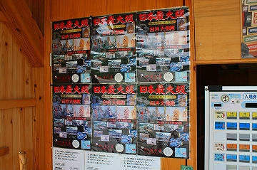
さて。チケット購入後、大仏殿の山門を潜ろうか、と歩を進めようとするも温泉のスタッフ（いや大仏殿のスタッフなのか？）さんが上まで車で送ってくれるとのこと。修行中の身とはいえ、猛烈な暑さだったのでここはお言葉に甘えさせていただきますよ。
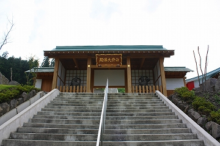 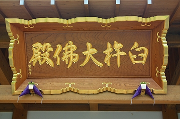
本来であればこの大階段を上っていかなければならないのだが、車でビュイ〜ンと大仏殿まで連れて行ってもらった。感謝。
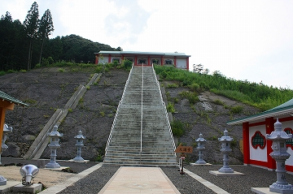 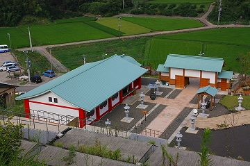
で、大仏殿である。金堂とある。
最近出来たばかりのお堂はあまり仏堂に興味のない方が設計したと思えるシンプルな造形であった。
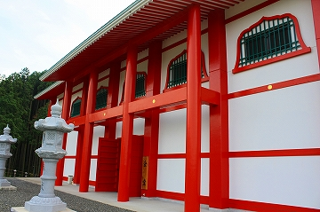 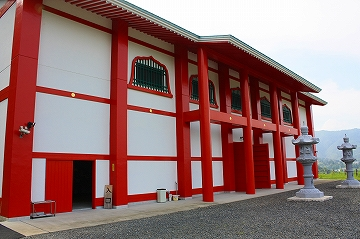
中に入るといきなり巨大な薬師如来。8.2メートルもあるという。
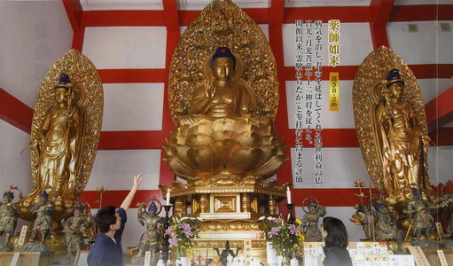
しかもそれだけではなく左右にも大きな日光月光菩薩が脇を固め、さらにその下には十二神将が護りを固めるというチーム薬師のフルバージョン。
その隣にはこれまた高さ8.2メートルの千手観音をはじめとした六観音の巨像が。
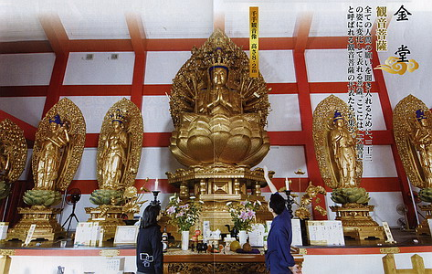
ここの仏像は全て撮影禁止だったので、お判りかと思いますがパンフレットの画像を載せさせてもらいました。
本来であれば俺様が土門拳ばりに仏像の毛穴までビッチリ肉薄するのもやぶさかではないが（自分でも何言ってんだか判んないです…）、ここはひとつ折り目のビッチリ入っちゃった画像で勘弁していただきたい。
と、載せたついでにパンフを読んでみると、2001年に夢のお告げで臼杵に仏像を祀ることになったそうな。
出た！チンデレラ☆ストーリーの王道、夢のお告げ！
その後、着工し始めた2002年、さらに御神託第二段として温泉が掘削されたのだそうな。
つまり温泉は大仏を建立した天からの御褒美、ということなんで、あくまでも大仏メインということなんですね。
てな訳で未だ首が据わったかどうかも判らない生まれたての大仏サマを堪能してから、坂道を下りもうひとつの大仏殿へと向かう。
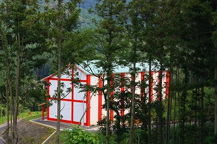
こちらもあまり仏殿に頓着しないタイプの建物。それゆえに内部に安置されている仏像彫刻の精緻さが際立つ。
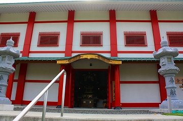 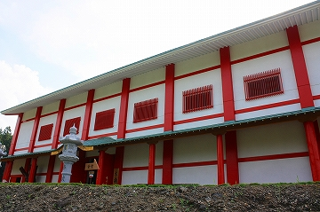
内部が体育館みたいだが、ある意味、仏像以外興味はないんです、的な潔さというか勢いが感じられる。
で、もうひとつの大仏殿へ。大講堂とある。
こちらには大日如来を中心とした金剛界立体曼荼羅が展開されている。
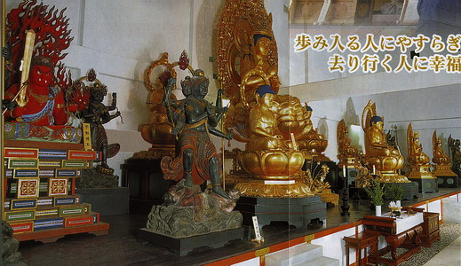
いやはやこの御時世にこれだけの仏像を揃えたのだから立派なものである。
ここ全体で仏像が70体あるとか。
本邦最新の大仏軍団は超ゴージャスだった。
大講堂から外へ出ると眼下には池があり、その向こうには大階段が見える。
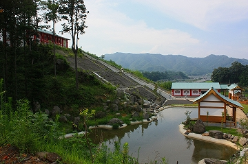
むむ。
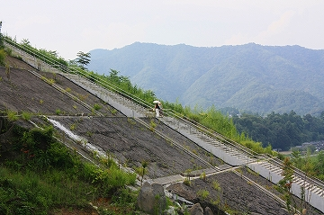
あの大階段を歩いて上っている人が！
暑かろう、辛かろう。私は車でビュイ〜ンと行っちゃったので知らないが大変だと思いますよ。
ご苦労様です。
池のほとりには龍神サマが。
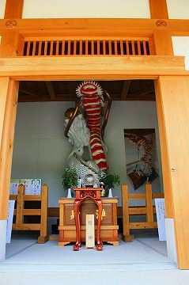
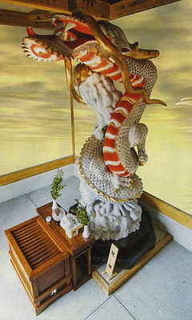
（パンフより）
池のほとりを歩いていくと最初に見た山門にたどり着く。
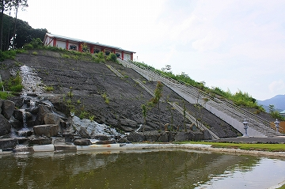
山門脇には小講堂なる建物が。
こちらには大仏はないが八大童子と不動サマ、愛染明王などが並んでいた。
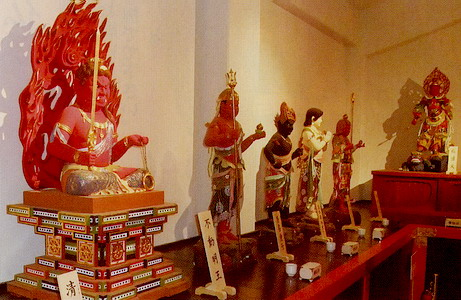
（パンフより）
中央には三面大黒、三方荒神、蔵王権現が納まる厨子が。
どれも新しいので彩色も鮮やかだ。
以前みうらじゅんさんが仏像は元々派手なんだからワビサビとか入れちゃダメなんですよ、的なハナシをされていて、激しく同意したものだが、いざワビサビ抜いたジャパニーズスタイルの仏像がこれだけ並んでいるのを見るとあまり見慣れていないせいか、若干の違和感は否めない。
しかしワビサビというフィルターを外してこそ見えてくる姿こそが真の「仏像」の姿なのだから、そういう意味では心して拝観せねばなるまい。江戸仏とか全然だめじゃんとか言ってる輩、正座して拝観すべし。
これにて臼杵大仏拝観終了。
正直あまり期待していなかったが、思いのほか立派な大仏さんがたくさんいて楽しかった。
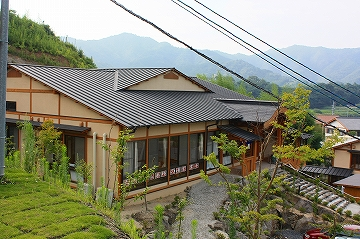
もちろん帰りは温泉にゆっくり浸かって夕方まで昼寝三昧…今日は暑かった…
しまった！臼杵石仏見るの忘れてた！
2008.08.
珍寺大道場 HOME